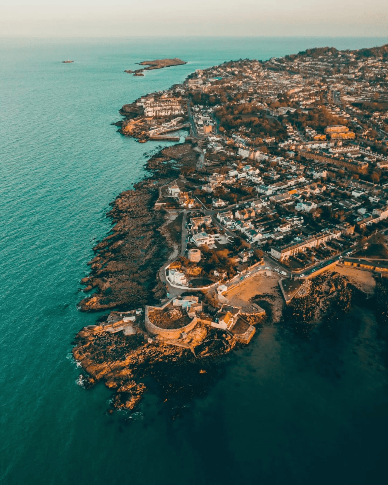

Fazer um intercâmbio de um ano na Irlanda foi uma das decisões mais impactantes e inesquecíveis da minha vida. Quando decidi passar 12 meses naquele país, eu sabia que seria uma experiência única, mas mal imaginava o quanto ela iria mudar minha perspectiva sobre o mundo, sobre mim mesmo e sobre o que significa estar longe de casa.
Chegada a Dublin – O Começo de uma Jornada:
Minha viagem começou com uma mistura de ansiedade e empolgação. Cheguei em Dublin no início da primavera, quando a cidade começa a florescer e o clima ainda está fresquinho, mas agradável. O aeroporto, pequeno mas eficiente, foi o ponto de partida para o que seria uma jornada de autoconhecimento.
A primeira impressão que tive de Dublin foi de um lugar cheio de vida e energia, com uma vibe jovem e moderna, mas ao mesmo tempo preservando uma rica história. As ruas do centro, repletas de pubs tradicionais, lojas de livros e músicos de rua, criavam um ambiente acolhedor e vibrante. No entanto, logo percebi que a Irlanda tem uma cultura própria, com características que a tornam diferente de tudo o que eu já conhecia.
O Desafio da Língua – O Inglês Irlandês:
Embora o inglês seja a língua oficial, o "sotaque irlandês" pode ser um grande desafio, especialmente no início. Eu já falava inglês, mas a velocidade da fala, a mistura de expressões regionais e a pronúncia peculiar dos irlandeses me deixaram um pouco perdido nas primeiras semanas. No começo, achei que estava em uma missão impossível, tentando entender o que as pessoas diziam em alguns momentos. Mas, com o tempo, fui me acostumando com a musicalidade da língua e comecei a perceber o quanto a comunicação é rica em nuances.
Eu me matriculei em um curso intensivo de inglês para melhorar minhas habilidades e também para me sentir mais confiante. As aulas eram bem dinâmicas, com muitos exercícios de conversação, o que me ajudou bastante a ganhar fluência. Fora da escola, tive muitas oportunidades de praticar com os locais, que sempre foram muito receptivos e pacientes comigo.
A Cultura Irlandesa – Pubs, Músicas e Paisagens de Tirar o Fôlego:
Viver na Irlanda foi, sem dúvida, um mergulho profundo em uma cultura que tem raízes históricas, mas que também se moderniza constantemente. Os pubs irlandeses são, de longe, uma das experiências mais marcantes. Não é apenas sobre a cerveja (embora a Guinness seja, de fato, deliciosa), mas sobre o ambiente acolhedor e as conversas espontâneas que surgem entre estranhos. Cada pub tem uma história própria, e a música tradicional ao vivo, com seus violões e banjos, é o toque final para um momento inesquecível.
As festas e celebrações também foram parte importante da minha experiência. Desde o famoso St. Patrick’s Day, que em Dublin se transforma em uma grande festa nas ruas, até os pequenos festivais locais, a Irlanda sempre soube como fazer a alegria dos seus moradores e turistas.
Além disso, as paisagens da Irlanda são um espetáculo à parte. Durante os fins de semana e feriados, aproveitei para viajar pelo país e fiquei impressionado com a beleza natural dos lugares. As falésias de Moher, as montanhas de Killarney, o lago de Glendalough e as praias desertas do oeste do país me deixaram sem palavras. A natureza irlandesa é mágica, e sempre que eu sentia falta de casa, um passeio ao ar livre tinha o poder de renovar minha energia.
Desafios e Crescimento Pessoal:
Claro, como qualquer experiência internacional, houve momentos difíceis. A saudade de casa bateu forte algumas vezes, especialmente nas datas comemorativas. As diferenças culturais, o clima imprevisível (que vai de chuva a sol em questão de minutos) e até mesmo o fato de estar tão longe da minha família me desafiavam de tempos em tempos.
Porém, cada dificuldade foi uma oportunidade de crescimento. Aprendi a ser mais independente, a me adaptar a situações novas e a lidar com a solidão de uma maneira mais saudável. Comecei a me conhecer melhor, a entender os meus limites e a desenvolver uma confiança que antes eu não sabia que tinha. A convivência com pessoas de diversas partes do mundo também foi extremamente enriquecedora. Convivendo com pessoas de culturas tão diferentes da minha, passei a valorizar a diversidade e a entender melhor a complexidade das relações humanas.
A Despedida – A Sensação de Dever Cumprido:
Quando o último dia chegou, eu estava dividido entre a felicidade de voltar para casa e a tristeza de deixar para trás um país que me acolheu com tanto carinho. A Irlanda foi minha casa por um ano, e eu sei que parte de mim vai ficar lá para sempre. Não é apenas o que vivi nas aulas ou nas viagens, mas também as amizades que construí, os desafios que enfrentei e as lições que aprendi.
Voltar ao Brasil foi emocionante, mas a saudade da Irlanda ficou, e tenho certeza de que voltarei um dia. O intercâmbio não foi apenas uma experiência acadêmica, mas uma jornada de crescimento pessoal que mudou minha forma de ver o mundo e a mim mesmo.
Se você está considerando fazer um intercâmbio na Irlanda, posso garantir: vai ser um ano que vale a pena. A Irlanda é um país que oferece muito mais do que turismo, ela oferece uma verdadeira imersão cultural e emocional.
